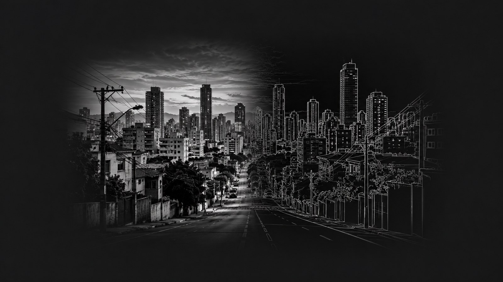

O post passado parou no gradiente, que já acha as bordas, só que devolve um contorno grosso e cheio de ruído. O detector de Canny é o passo seguinte e continua sendo o mais usado. Antes de tudo, ele foi pensado em cima de três critérios do que seria um detector bom: achar as bordas de verdade sem inventar as falsas, marcar a borda o mais perto possível do lugar certo, e dar uma resposta só pra cada borda, em vez de várias linhas paralelas no mesmo contorno.
A primeira parte é a que eu já tinha visto: suavizar com uma gaussiana e derivar, de preferência na mesma passada, usando a derivada da gaussiana em x e em y. Daí saem duas coisas, a magnitude do gradiente, que diz a força da borda, e a orientação, que diz pra onde a intensidade está mudando. Essa orientação, que parecia só um detalhe, é justamente o que faz o resto funcionar.
Depois vem a supressão de não-máximos, que é a etapa que afina tudo. Pra cada pixel, o algoritmo olha os dois vizinhos na direção do gradiente e pergunta se ele é o maior dos três. Se não for, ele não está no topo da crista da borda, então zera. No fim, aquele contorno de vários pixels de espessura vira uma linha fina, de um pixel.
Por último tem a limiarização com histerese, que usa dois limiares em vez de um. O que passa do limiar alto é borda forte e fica. O que fica entre o limiar baixo e o alto só continua se estiver encostado numa borda forte. E o que está abaixo do limiar baixo cai fora. Essa ligação é o que evita que uma borda verdadeira fique picotada por causa de uma variação boba no meio dela.
O que mais muda o resultado no fim é o sigma da gaussiana. Com sigma pequeno aparece muito detalhe fino, com sigma grande sobram só os contornos grandes e o resto some. Não tem valor certo, depende do que você quer enxergar. É um algoritmo de 1986 e até hoje é o padrão, tanto que já vem pronto no OpenCV e no scikit-image.